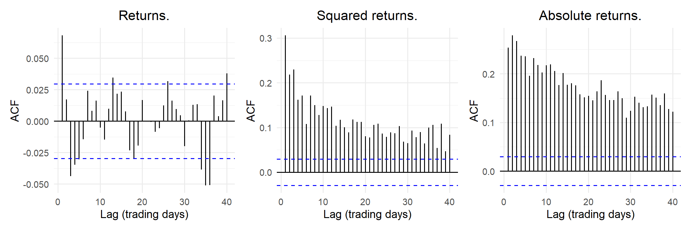
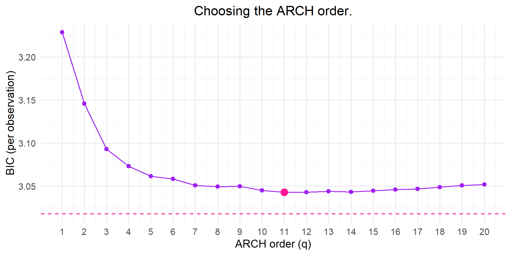
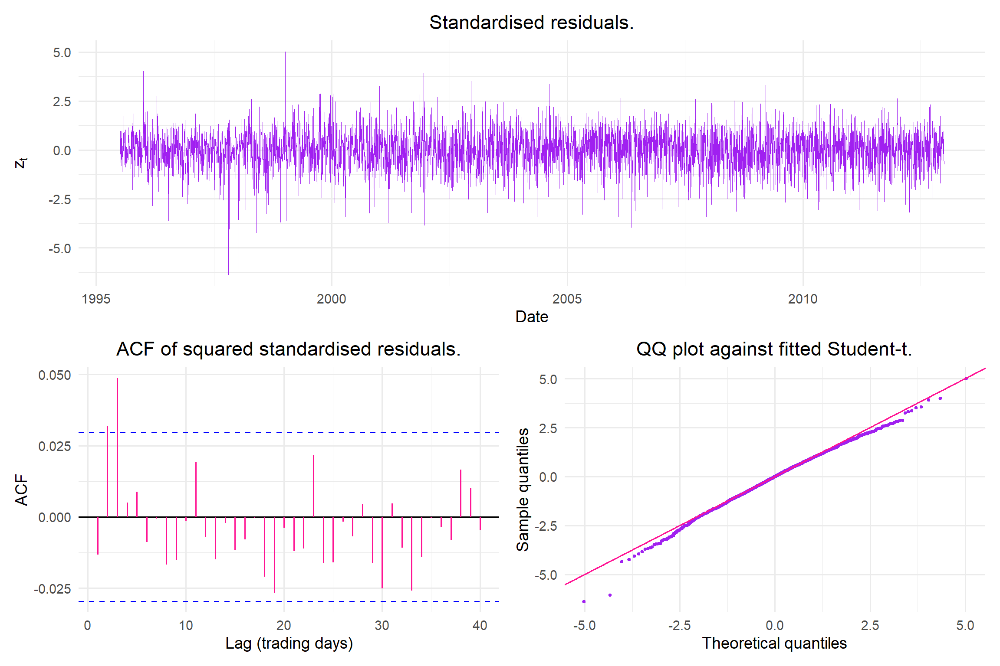
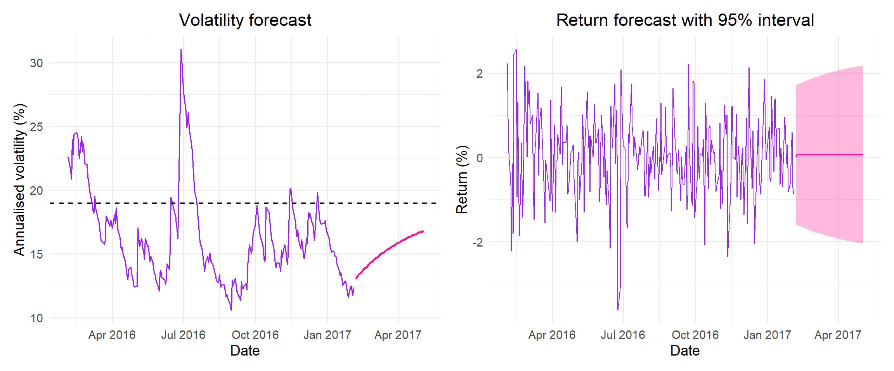

Predicting the volatility of daily Johannesburg Stock Exchange All Share Index returns
This project aims to predict the volatility of the JSE All Share Index (ALSI) returns by fitting both ARCH and GARCH models and determining which models yield the best out-of-sample volatility forecasts. These models are compared to the Exponentially Weighted Moving Average (EWMA) benchmark.
Section & Topic: Conditional Variance Models
Project Type: Model implementation and comparison on real-world data. This includes a GARCH(1,1) likelihood from first principles.
Aim: To predict the volatility of JSE ALSI returns and to determine, from the above mentioned models, the optimal one for out-of-sample volatility and Value-at-Risk forecasts.
Data Used:
Gebbie, T. (2020) Daily Sampled South African Market Index Data 1994-2017, University of Cape Town, Dataset, https://doi.org/10.25375/uct.11302325.v1
Methods Used: ARCH, GARCH and GARCH extensions models are fitted to the JSE ALSI returns.
The aim of this project is to use conditional variance models to predict the volatility of the JSE ALSI returns. JSE return risk is not constant with periods of high volatility following periods of high volatility and periods of low volatility following periods of low volatility. Modelling returns with a constant-variance model results in the risk being understated when it is high and overstated when it is low.
ARCH (Engle, 1982) and GARCH (Bollerslev, 1986) models let the current conditional variance depends on recent shocks as well as yesterday’s variance. GJR-GARCH (Glosten et al., 1993) extends the GARCH model to let negative shocks have a larger effect on volatility than positive ones, this is known as the leverage effect.
The financial series used is the daily FTSE/JSE All Share Index total return index \(P_t\) (ticker J203, dividends reinvested) over the period from 30 June 1995 to 3 February 2017. The time index used is “trading day” since weekends are excluded. The daily log returns (%) are modelled,
\[
r_t = 100[lnP_t - lnP_{t-}].
\] Log returns are modelled since asset prices wander and their variance grows without bound. The series consists of 5396 total daily returns. The models are estimated using the training set (July 1995 - December 2012) and evaluated on the test set (January 2013 - February 2017).
# Set seed for reproducibility: set.seed(2026)# Specify data paths: data_path ="_data/PT-DATA-ALBI-JIBAR-JSEIND-Daily-1994-2017.xlsx"pt_path ="_data/balancedDataTable.xlsx"# monthly data (STEFI,ALBI,ALSI)sheet_name ="JSE Various Indices"ticker ="J203:XJSE:IND"field ="TRI"# Training and test sets: train_end =as.Date("2012-12-31") pt_start =as.Date("2004-11-30") pt_end =as.Date("2016-12-31")ann_factor =252# trading days per yearrefit_every =50# rolling models are re-estimated every 50 trading days# Read header rows (rows 1-4):hdr =read_excel(data_path, sheet = sheet_name, col_names =FALSE, n_max =4)
Table 1: Summary statistics of daily ALSI log returns (%).
Sample
N
Mean
Std dev
Annual volatility
Skewness
Excess kurtosis
Min
Max
Full
5396
0.055
1.225
19.444
-0.446
6.005
-12.689
7.423
Training
4373
0.059
1.278
20.284
-0.463
6.067
-12.689
7.423
Test
1023
0.040
0.967
15.353
-0.253
1.169
-3.622
4.159
Figure 1 shows an increasing index level trend from 1994 through to 2017, however Figure 2 illustrates the returns fluctuating around a mean of approximately zero. This is indicative of volatility clustering. Figure 2 shows the high volatility during the 1997-1998 and 2008-2009 financial crises. The summary statistics recorded in Table 1 suggest a negatively skewed distribution (skewness = -0.446) with heavy tails (excess kurtosis = 6.005).
Code
acf_returns =ggAcf(r_train, lag.max =40) +labs(title ="Returns.", x ="Lag (trading days)", y ="ACF") + theme_projacf_sq_returns =ggAcf(r_train^2, lag.max =40) +labs(title ="Squared returns.", x ="Lag (trading days)", y ="ACF") + theme_projacf_abs_returns =ggAcf(abs(r_train), lag.max =40) +labs(title ="Absolute returns.", x ="Lag (trading days)", y ="ACF") + theme_proj acf_returns | acf_sq_returns | acf_abs_returns

Figure 3: ACF of daily returns, squared residuals and absolute returns of the training set. The dashed lines indicate approximate 95% bounds.
Figure 3 illustrates weak autocorrelation in the returns as most sample autocorrelations lie within the 95% bounds. Both the squared returns and absolute returns ACF plots show significant, slowly decaying autocorrelations. This is indicative of volatility clustering and motivates the use of conditional variance models such as ARCH and GARCH.
In ?@tbl-arch_tests the small p-values provide evidence that the squared residuals are serially correlated and thus the series has time varying conditional variance.
Model specification
Conditional variance models consist of both a mean and a variance equation:
where \(\mu_t=\mu+\phi r_{t-1}\), \(\sigma_t^2\) is the conditional variance and \(D\) is the standard normal or a standardised Student-\(t\) distribution with \(\nu\) degrees of freedom.
In the ARCH model, the conditional variance depends on past squared shocks. The GARCH model lets the conditional variance depend on its own past as well as on past squared shocks. The GJR-GARCH model is a threshold model that captures the asymmetric leverage effect, where negative shocks increase volatility more than positive shocks of the same magnitude.
\(\alpha_0 + \sum^q_{i=1} (\alpha_i + \gamma_iI_{t-i})\varepsilon^2_{t-i} + \sum^p_{j=1}\beta_j \sigma_{t-j}^2\), where \(I_{t-i} = 1\) if \(\varepsilon_{t-i} < 0\) and \(0\) otherwise
with \(\alpha_0 > 0\) and \(\alpha_i, \beta_i, \gamma_i \ge 0\). The GARCH and GJR-GARCH models are fitted with \(p = q = 1\). The persistence is denoted as \(\rho = \alpha + \beta\) for GARCH(1,1) and for a GJR-GARCH with a symmetric \(D\): \(\rho = \alpha + \beta + \gamma/2\). If \(\rho < 1\) the variance process of the series is stationary. The unconditional variance is defined as \(\alpha_0/(1-\rho)\), and the half-life of a volatility shock is \(\log(0.5)/\log(\rho)\).
The three models above are compared to a constant variance model, \(\sigma_t^2 = s^2\), where \(s\) denotes the sample variance as well as EWMA with \(\sigma_t^2 = 0.94\,\sigma_{t-1}^2 + 0.06\,\varepsilon_{t-1}^2\), a GARCH(1,1) with \(\omega = 0\), \(\alpha + \beta = 1\) and no parameters estimated.
All ARCH and GARCH models are estimated by maximum likelihood using the rugarch package.
Determing the optimal ARIMA model and testing for ARCH effects
Conditional variance models consist of both a mean and variance equation. The conditional mean must be modelled before modelling the volatility. Returns are modelled using the best ARIMA model to capture any predictable structure in the mean. The residuals of the ARIMA model represent the shocks, \(\varepsilon_t\). Any autocorrelation left unexplained by the mean model would distort the variance model fitted to the residuals. An ARIMA model assumes constant variance and Engle’s (1982) LM test is used to test if this assumption holds. A small p-value rejects the null hypothesis of no ARCH effect, suggests volatility clustering and justifies an ARCH/GARCH model.
Code
# Parameter grid:arima_grid =expand_grid(p=0:2,q=0:2) # Test different arma models# Function to fit multiple ARIMA models:arima_fxn =function(dat,p,q) { fit =arima(dat,order=c(p,0,q),method="ML")tibble(`ARIMA(p,d,q)`=paste0("(",p,",0,",q,")"),loglik =as.numeric(logLik(fit)),AIC =AIC(fit),BIC =BIC(fit))}arima_res = arima_grid |>pmap(\(p,q) arima_fxn(r_train,p,q)) |>list_rbind() |>arrange(BIC)
Warning in arima(dat, order = c(p, 0, q), method = "ML"): possible convergence
problem: optim gave code = 1
Code
arima_order =c(1,0) # best p and qknitr::kable(arima_res,digits=2)
Table 2: Comparison of the log-likelihood, BIC and AIC for candidate mean models.
ARIMA(p,d,q)
loglik
AIC
BIC
(1,0,0)
-7266.18
14538.35
14557.50
(0,0,1)
-7266.52
14539.05
14558.20
(2,0,2)
-7254.24
14520.49
14558.79
(0,0,2)
-7265.33
14538.66
14564.19
(2,0,0)
-7265.83
14539.67
14565.20
(1,0,1)
-7266.03
14540.07
14565.60
(0,0,0)
-7276.33
14556.66
14569.42
(1,0,2)
-7264.23
14538.45
14570.37
(2,0,1)
-7264.72
14539.45
14571.36
Table 2 displays the log-likelihood, AIC and BIC values for all candidate ARIMA models. BIC selects ARIMA(1,0,0) while AIC selects ARIMA(2,0,2). The log-likelihood will always favour a more complicated model as additional parameters will always improve the log-likelihood, however, this leads to overfitting. The candidate models are compared using BIC as this penalises the inclusion of additional parameters more heavily than AIC and thus ARIMA(1,0,0) is selected.
Code
fit =arima(r_train,order=c(arima_order[1],0,arima_order[2]),method="ML")fit_mean =as.numeric(residuals(fit))lags =c(5,10,20)sqr_res = (fit_mean -mean(fit_mean))^2# squared (demeaned) residualsarch_tbl =tibble(Lag = lags,`Engle's LM`=sapply(lags, function(L) ArchTest(fit_mean, lags = L)$statistic),`ELM p-value`=sapply(lags, function(L) ArchTest(fit_mean, lags = L)$p.value),`LB squared residuals`=sapply(lags, function(L) Box.test(fit_mean^2, lag = L, type ="Ljung-Box")$statistic),`LB p-value`=sapply(lags, function(L) Box.test(fit_mean^2, lag = L, type ="Ljung-Box")$p.value)) |>mutate(across(c(`ELM p-value`, `LB p-value`), ~format.pval(.x, eps =0.001)))knitr::kable(arch_tbl,digits=3)
Table 3: Ljung–Box tests on the residuals and squared residuals of the ARIMA(1,0,0) and the Engle’s ARCH LM test, at lags 5, 10 and 20.
Lag
Engle’s LM
ELM p-value
LB squared residuals
LB p-value
5
646.753
< 0.001
1201.460
< 0.001
10
710.147
< 0.001
1663.234
< 0.001
20
735.903
< 0.001
2239.527
< 0.001
In ?@tbl-arch_effect, both the Ljung-Box test on squared residuals and Engle’s ARCH LM test have p-values \(<0.001\) at all tested lags, so the null hypothesis of no ARCH effects is rejected. The squared shocks are autocorrelated, indicating volatility clustering. This provides evidence that the constant-variance assumption does not hold and justifies the use of a conditional variance model.
Conditonal variance model selection and estimation
ARCH mode parameters
Code
# Fit ARCH(q) and store BIC:q_values =1:20arch_results =vector("list", length(q_values))for (q inseq_along(q_values)) {# Specify ARCH(q) model arch_spec =ugarchspec(variance.model =list(model ="sGARCH", garchOrder =c(q, 0)),mean.model =list(armaOrder = arima_order, include.mean =TRUE),distribution.model ="norm")# Fit model to training set: arch_fit =tryCatch(ugarchfit(spec = arch_spec, data = r_train, solver ="hybrid"),error =function(e) NULL)# Extract BIC:if (is.null(arch_fit) ||convergence(arch_fit) !=0) { bic =NA } else { ic =infocriteria(arch_fit) } arch_results[[q]] =tibble(Model =paste0("ARCH(", q, ")"),q = q,loglik =likelihood(arch_fit),AIC = ic["Akaike", 1],BIC = ic["Bayes", 1])}arch_results =list_rbind(arch_results)knitr::kable(arch_results,digits=4)
Model
q
loglik
AIC
BIC
ARCH(1)
1
-7042.627
3.2228
3.2286
ARCH(2)
2
-6857.410
3.1385
3.1458
ARCH(3)
3
-6737.751
3.0843
3.0930
ARCH(4)
4
-6689.647
3.0627
3.0729
ARCH(5)
5
-6660.464
3.0498
3.0615
ARCH(6)
6
-6649.111
3.0451
3.0582
ARCH(7)
7
-6628.903
3.0363
3.0509
ARCH(8)
8
-6621.367
3.0333
3.0494
ARCH(9)
9
-6617.911
3.0322
3.0497
ARCH(10)
10
-6603.667
3.0261
3.0451
ARCH(11)
11
-6594.670
3.0225
3.0429
ARCH(12)
12
-6590.513
3.0210
3.0429
ARCH(13)
13
-6588.614
3.0206
3.0440
ARCH(14)
14
-6582.753
3.0184
3.0432
ARCH(15)
15
-6581.449
3.0183
3.0445
ARCH(16)
16
-6580.490
3.0183
3.0460
ARCH(17)
17
-6577.576
3.0174
3.0466
ARCH(18)
18
-6577.977
3.0181
3.0487
ARCH(19)
19
-6578.564
3.0188
3.0509
ARCH(20)
20
-6576.426
3.0183
3.0518
Code
# ARCH order with the lowest BIC:q_star = arch_results$q[which.min(arch_results$BIC)]# Fit GARCH(1,1) with the same mean and distribution for comparison:garch11_spec =ugarchspec(variance.model =list(model ="sGARCH", garchOrder =c(1, 1)),mean.model =list(armaOrder = arima_order, include.mean =TRUE),distribution.model ="norm")garch11_fit =ugarchfit(spec = garch11_spec, data = r_train, solver ="hybrid")garch11_bic =infocriteria(garch11_fit)[2]
Code
ggplot(data = arch_results,mapping =aes(x = q, y = BIC)) +geom_line(col = col_main) +geom_point(col = col_main, size =2) +geom_point(data = arch_results[arch_results$q == q_star, ], # highlight the best ARCH ordercol = col_accent, size =4) +geom_hline(yintercept = garch11_bic, # GARCH(1,1) for comparisonlinetype ="dashed", col = col_accent) +scale_x_continuous(breaks = q_values) +labs(title ="Choosing the ARCH order.",x ="ARCH order (q)",y ="BIC (per observation)") +theme_minimal(base_size =14) +theme(plot.title =element_text(hjust =0.5))

Figure 4: BIC (per observation) of ARCH(q) candidate models with normal innovations. The pink dashed line indicates the BIC of GARCH(1,1) with the same mean and distribution.
?@fig-arch_order shows the BIC of ARCH(\(q\)) models for \(q = 1, \dots, 20\). The BIC decreases as \(q\) increases and is lowest at \(q=11\). Beyond \(q=11\), BIC increases slightly as the additional parameters results in greater penalisation. This indicates that a pure ARCH model needs a large number of lags to capture the slow decay of the volatility. This is consistent with the slowly decaying autocorrelation of the squared residuals in the EDA. All cancidate ARCH models have larger BIC values than a GARCH(1,1) model. This motivates the use of GARCH models that will give geometrically declining weight to all past squared shocks.
Candidate models
Code
# Specify candidate models (all use the same AR(1) mean equation):arch_spec =ugarchspec(variance.model =list(model ="sGARCH", garchOrder =c(q_star, 0)),mean.model =list(armaOrder = arima_order, include.mean =TRUE),distribution.model ="norm")garchN_spec =ugarchspec(variance.model =list(model ="sGARCH", garchOrder =c(1, 1)),mean.model =list(armaOrder = arima_order, include.mean =TRUE),distribution.model ="norm")garchT_spec =ugarchspec(variance.model =list(model ="sGARCH", garchOrder =c(1, 1)),mean.model =list(armaOrder = arima_order, include.mean =TRUE),distribution.model ="std") # Student-t errorsgjrT_spec =ugarchspec(variance.model =list(model ="gjrGARCH", garchOrder =c(1, 1)),mean.model =list(armaOrder = arima_order, include.mean =TRUE),distribution.model ="std") # GJR with Student-t errorsspec_list =list("ARCH"= arch_spec,"GARCH-N"= garchN_spec,"GARCH-t"= garchT_spec,"GJR-GARCH-t"= gjrT_spec)# Fit each model to the training set:fits =list()for (model innames(spec_list)) { fits[[model]] =ugarchfit(spec = spec_list[[model]], data = r_train, solver ="hybrid")}
Table 4: In-sample comparison of the candidate models (training sample). AIC/BIC are per observation (rugarch convention). Half-life in trading days; unconditional volatility annualised.
Model
Parameters
LogLik
AIC
BIC
Persistence
Half-life
Unconditional volatility (%)
GJR-GARCH-t
7
-6493.542
2.973
2.983
0.987
54.893
20.065
GARCH-t
6
-6513.097
2.982
2.990
0.992
84.966
23.862
GARCH-N
5
-6577.512
3.011
3.018
0.993
98.205
25.862
ARCH
14
-6594.670
3.022
3.043
0.864
4.754
22.662
Code
# Best model (lowest BIC):best_name = ic_table$Model[1]best_fit = fits[[best_name]]
Table 4 compares the candidate models that were fitted on the training set. GJR-GARCH-\(t\) is selected as the best model as it has the lowest AIC (2.973) and BIC (2.983). Changing from normal to Student-\(t\) innovations increases the log-likelihood by 64.4 for one additional parameter and lowers AIC and BIC values. By permitting asymmetry, GJR-GARCH-\(t\) increases the log-likelihood by a further 19.6. The ARCH(11) model performs worst despite having the most parameters, which confirms that GARCH captures the persistence in volatility far more efficiently.
All of the fitted models have persistence less than 1, thus volatility will revert to a long-run level. The GARCH models are highly persistent (0.987–0.993), with volatility shocks taking between 55 and 98 trading days to halve. In comparison, ARCH(11) has a half-life of just less than 5 days and thus cannot accurately capture the length of time that high volatility lasts. The unconditional volatility of GJR-GARCH-\(t\) (20.1%/year) is close to the sample volatility of the training set (20.3%, Table 1), whereas the symmetric GARCH models overestimate it (23.9% and 25.9%).
Code
# Robust coefficient table of the best model: estimate, standard error, t value, p-valuecoefs = best_fit@fit$robust.matcoefparam_table =tibble(Parameter =c("$\\mu$", "$\\phi$", "$\\omega$", "$\\alpha$", "$\\beta$", "$\\gamma$", "$\\nu$"),Description =c("Mean daily return (%)","AR(1) coefficient","Variance intercept","Reaction to last shock (ARCH)","Carry-over of last variance (GARCH)","Extra reaction to negative shocks (leverage)","Student-t degrees of freedom"),Estimate = coefs[, 1],`Robust SE`= coefs[, 2],`p-value`= coefs[, 4])kable(param_table, digits =4)
Table 5: Parameter estimates of the selected GJR-GARCH(1,1) model with Student-t innovations (training sample), with robust standard errors.
Parameter
Description
Estimate
Robust SE
p-value
\(\mu\)
Mean daily return (%)
0.0784
0.0156
0.0000
\(\phi\)
AR(1) coefficient
0.0745
0.0141
0.0000
\(\omega\)
Variance intercept
0.0200
0.0063
0.0016
\(\alpha\)
Reaction to last shock (ARCH)
0.0492
0.0123
0.0001
\(\beta\)
Carry-over of last variance (GARCH)
0.8931
0.0141
0.0000
\(\gamma\)
Extra reaction to negative shocks (leverage)
0.0903
0.0186
0.0000
\(\nu\)
Student-t degrees of freedom
9.8673
1.5616
0.0000
Table 5 displays the estimated parameters of the chosen GJR-GARCH-\(t\) model. All parameters have p-values \(<0.01\) and are thus statistically significant at the 1% level. Considering the mean equation, the average daily return is \(\hat\mu\) = 0.078% and the AR(1) coefficient is small, \(\hat\phi\) = 0.075. This suggests that returns are only weakly predictable from the previous day’s return.
In the variance equation, \(\hat\alpha\) = 0.049 measures the volatility reaction to a positive shock, while \(\hat\alpha + \hat\gamma\) = 0.140 measures the volatility reaction to a negative shock. A negative shock increases the following day’s variance by approximately 2.8 times more than a positive shock of the same magnitude. This provides evidence of a leverage effect. The large \(\hat\beta\) value (0.893) indicates that almost 90% of today’s variance is carried over to tomorrow. The persistence of the GJR-GARCH-\(t\) model, \(\hat\alpha + \hat\beta + \hat\gamma/2\) = 0.987, in Table 4, indicates that the volatility shocks die out slowly. The estimated degrees of freedom, \(\hat\nu\) = 9.9, indicate heavier tails than the normal distribution, even after volatility clustering is accounted for. This supports the use of Student-\(t\) innovations.
GARCH(1,1) from first principles
Code
# Function to calculate the negative log-likelihood of a Gaussian GARCH(1,1)# with a constant mean: garch11_nll_fxn =function(par, r) { mu = par[1] omega = par[2] # this is alpha0 in notes alpha = par[3] beta = par[4]# Check: return a very large value if the parameter constraints are broken:if (omega <=0|| alpha <0|| beta <0|| alpha + beta >=1) {return(1e10) }# Calculate shocks: e = r - mu# Initialise: n =length(r) s2 =numeric(n) s2[1] =mean((r -mean(r))^2)# For loop to calculate the conditional variance: for (t in2:n) { s2[t] = omega+alpha*e[t-1]^2+beta*s2[t-1] }# Calculate negative log-likelihood:# optim minimises -> minimise -loglik: nll =0.5*sum(log(2*pi)+log(s2)+e^2/s2)return(nll)}# Starting values: mean return, small omega, typical alpha and beta:start_val =c(mean(r_train),0.05*var(r_train),0.08,0.90)# Maximise the log-likelihood:own_fit =optim(par = start_val,fn = garch11_nll_fxn,r = r_train,method ="L-BFGS-B",lower =c(-Inf, 1e-8, 0, 0),upper =c(Inf, Inf, 1, 1),hessian =TRUE)own_est = own_fit$parown_se =sqrt(diag(solve(own_fit$hessian)))# std err from inverse H# Fit GARCH(1,1) using built in package `rugarch`:pkg_spec =ugarchspec(variance.model =list(model ="sGARCH", garchOrder =c(1, 1)),mean.model =list(armaOrder =c(0, 0), include.mean =TRUE),distribution.model ="norm")pkg_fit =ugarchfit(spec = pkg_spec, data = r_train, solver ="hybrid")pkg_est =coef(pkg_fit)pkg_se = pkg_fit@fit$matcoef[, 2]# Compare:own_tbl =tibble(Parameter =c("$\\mu$", "$\\alpha_0$", "$\\alpha$", "$\\beta$", "Log-likelihood"),`First principles`=c(own_est, -own_fit$value),`First principles SE`=c(own_se, NA),rugarch =c(pkg_est, likelihood(pkg_fit)),`rugarch SE`=c(pkg_se, NA))options(knitr.kable.NA ="-")kable(own_tbl, digits =4)
Table 6: Gaussian GARCH(1,1) with a constant mean: own maximum likelihood implementation (optim) compared with rugarch (training sample).
Parameter
First principles
First principles SE
rugarch
rugarch SE
\(\mu\)
0.0952
0.0143
0.0951
0.0143
\(\alpha_0\)
0.0194
0.0046
0.0194
0.0046
\(\alpha\)
0.1110
0.0103
0.1109
0.0103
\(\beta\)
0.8817
0.0106
0.8819
0.0106
Log-likelihood
-6589.7137
-
-6589.7168
-
Table 6 compares the results from a Gaussian GARCH(1,1) model, with a constant mean, coded from first principals to the same model fitted with the built in function rugarch. All parameter estimates agree to 3 decimal places and there is a 0.003 difference in the log-likelihoods. The standard errors for both implementations agree to 4 decimal places.
Model diagnostics
Code
diag_tab =tibble()for (model innames(fits)) {# Standardised residuals z_t = e_t / sigma_t: z =as.numeric(residuals(fits[[model]], standardize =TRUE))# Ljung-Box on z (any remaining autocorrelation in the mean?): lb_z =Box.test(z, lag =10, type ="Ljung-Box", fitdf =sum(arima_order))# Ljung-Box on z^2 (any remaining volatility clustering?): lb_z2 =Box.test(z^2, lag =10, type ="Ljung-Box", fitdf =2)# Engle's ARCH LM test on z: lm_z = FinTS::ArchTest(z, lags =10)# Excess kurtosis of z (0 for a normal distribution): kurt =mean((z -mean(z))^4) /sd(z)^4-3 diag_tab =bind_rows(diag_tab,tibble(Model = model,`LB z (10)`= lb_z$p.value,`LB z² (10)`= lb_z2$p.value,`ARCH LM (10)`= lm_z$p.value,`Excess kurtosis of z`= kurt))}kable(diag_tab, digits =3)
Table 7: Diagnostics on the standardised residuals \(z_t\) of each model (training sample): Ljung–Box p-values at lag 10 for \(z_t\) and \(z_t^2\), Engle’s ARCH LM p-value at lag 10, and the excess kurtosis of \(z_t\). Large p-values mean no remaining dependence.
Model
LB z (10)
LB z² (10)
ARCH LM (10)
Excess kurtosis of z
ARCH
0.655
0.505
0.709
1.901
GARCH-N
0.636
0.008
0.023
1.605
GARCH-t
0.504
0.003
0.010
1.603
GJR-GARCH-t
0.568
0.017
0.043
1.361
Code
# Standardised residuals of the best model:z_best =as.numeric(residuals(best_fit, standardize =TRUE))# 1. Standardised residuals over time:z_df =tibble(date = alsi$date[alsi$sample =="Train"], z = z_best)plot_z =ggplot(data = z_df,mapping =aes(x = date, y = z)) +geom_line(col = col_main, linewidth =0.3) +labs(title ="Standardised residuals.",x ="Date",y =expression(z[t])) +theme_minimal(base_size =14) +theme(plot.title =element_text(hjust =0.5))# 2. ACF of squared standardised residuals:acf_z2 =acf(z_best^2, lag.max =40, plot =FALSE)acf_df =tibble(lag =as.numeric(acf_z2$lag)[-1], # drop lag 0acf =as.numeric(acf_z2$acf)[-1])ci =1.96/sqrt(length(z_best)) # 95% boundsplot_acf =ggplot(data = acf_df,mapping =aes(x = lag, y = acf)) +geom_hline(yintercept =0) +geom_hline(yintercept =c(-ci, ci), linetype ="dashed", col ="blue") +geom_segment(aes(xend = lag, yend =0), col = col_accent) +labs(title ="ACF of squared standardised residuals.",x ="Lag (trading days)",y ="ACF") +theme_minimal(base_size =14) +theme(plot.title =element_text(hjust =0.5))# 3. QQ plot against the fitted Student-t distribution:nu_hat =unname(coef(best_fit)["shape"]) # estimated degrees of freedomtheo_q =qdist(distribution ="std", p =ppoints(length(z_best)),mu =0, sigma =1, shape = nu_hat) # theoretical quantilesqq_df =tibble(theoretical = theo_q, sample =sort(z_best))plot_qq =ggplot(data = qq_df,mapping =aes(x = theoretical, y = sample)) +geom_point(col = col_main, size =0.8) +geom_abline(col = col_accent) +labs(title ="QQ plot against fitted Student-t.",x ="Theoretical quantiles",y ="Sample quantiles") +theme_minimal(base_size =14) +theme(plot.title =element_text(hjust =0.5))plot_z / (plot_acf + plot_qq)

Figure 5: Diagnostics for the selected GJR-GARCH-t model: standardised residuals over time (top), ACF of the squared standardised residuals (bottom left) and QQ plot against the fitted Student-t distribution (bottom right).
The diagnostics of each model’s standardised residuals, \(z_t\), are displayed in Table 7. The p-values for the Ljung-Box test on \(z_t\) are \(> 0.05\) for all models. We fail to reject the null hypothesis and conclude that no significant autocorrelation remains in the mean and that the AR(1) mean equation is acceptable. Prior to model fitting, Engle’s ARCH LM statistic at lag 10 was 710.1 (?@tbl-arch_effect), with a p-value \(<<0.001\). After fitting, the ARCH LM p-values of the three GARCH models increase to between \(0.010\) and \(0.043\). This is still significant at the 5% level. With over 4000 observations, even small autocorrelations become statistically significant. Figure 5 illustrates the small remaining autocorrelations in comparison to those in @fig (reference EDA plot here), showing that most of the volatility clustering has been removed.
ARCH(11) outperforms the other three models in terms of the diagnostics since the 11 lags absorb short-term dependency, however this model cannot capture the persistence of volatility as seen in Table 4. Out of the GARCH models, GJR-GARCH-\(t\) has the lowest remaining dependence (Ljung-Box p-value = 0.017).
The excess kurtosis of the standardised residuals drops from 6.1 for the raw returns, as seen in Table 1, to 1.4 for the GJR-GARCH-\(t\) model. This shows that most of the heavy tails can be attributed to volatility clustering. The remaining excess kurtosis is close to that of a Student-\(t\) distribution with \(\hat\nu \approx 10\) degrees of freedom, \(6/(\nu - 4) \approx 1.0\), which supports the Student-\(t\) innovations. This is confirmed by the QQ-plot in Figure 5 where the points like on the diagonal except for a few extreme negative returns.
Out-of-Sample Model evaluation
Code
# Convert returns to ts object: r_xts = xts::xts(alsi$r, order.by = alsi$date)# Directory to save rolling forecasts:roll_dir ="_data/rolling"dir.create(roll_dir, showWarnings =FALSE, recursive =TRUE)roll_list =list()# For loop to loop through 4 models:for (model innames(spec_list)) { file_name =file.path(roll_dir, paste0(gsub("[^A-Za-z0-9]", "_", model), ".rds"))# Load saved forecasts:if (file.exists(file_name)) { roll_list[[model]] =readRDS(file_name) } else {# One-day-ahead forecasts for every test day, re-estimating every 50 days: roll =ugarchroll(spec = spec_list[[model]],data = r_xts,forecast.length = n_test,refit.every = refit_every,refit.window ="recursive", # expanding windowsolver ="hybrid",calculate.VaR =TRUE,VaR.alpha =c(0.01, 0.05))saveRDS(roll, file_name) roll_list[[model]] = roll }}
Figure 6: Out-of-sample one-day-ahead volatility forecasts (annualised %) of the constant model, EWMA and the best GARCH model, with annualised absolute returns in grey.
Since true variance is unobservable, volatility forecasts have to be compared with a noisy proxy, the squared return. Following Patton (2011), forecasts are compared using QLIKE, \(\text{QLIKE} = \log h_t + \hat\varepsilon_t^2 / h_t\), a loss function designed for noisy variance proxies. This metric is less affected by extreme days making it more reliable than MSE.
Table 8 reports the average MSE and QLIKE loss of each model’s one-day-ahead variance forecasts over the test set. The GJR-GARCH-\(t\) model has the lowest score on both measures (QLIKE = 0.805, MSE = 2.617). This is in agreement with the model chosen by BIC on the training set. When comparing models based on QLIKE, the constant-variance model performs the worst (1.063), providing evidence that the volatility of ALSI returns is predictable. The pure ARCH model slightly outperforms EWMA with QLIKE scores of 0.840 and 0.849 respectively. EWMA is a restricted GARCH(1,1) with no constant and fixed parameters (\(\alpha = 0.06\), \(\beta = 0.94\)), so it has no long-run variance to revert to. Both of these models perform worse than GARCH-N and GARCH-\(t\) (0.826 and 0.825). The addition of asymmetry yields the greatest improvement (0.805).
MSE ranks EWMA slightly above GARCH-N and GARCH-t (2.646 compared to 2.653 and 2.647). However, the differences are very small and MSE is more affected by extreme absolute returns, so the models are ranked according to QLIKE.
Figure 6 displays the one-day-ahead volatility forecasts of the constant-variance model, EWMA and GJR-GARCH-\(t\) for the test set. The annualised absolute returns are shown in grey. The constant model is just a flat line, underpredictng when returns spike and over predicting when returns drop. Both EWMA and GJR-GARCH-\(t\) rise sharply after large returns and decay slowly, this is indicative of the high persistence estimated earlier. In calm periods, EWMA drops lower than GJR-GARCH-\(t\) since it has no long-run variance to revert to. GJR-GARCH-\(t\) rises more after large drop then EWMA, due to the inclusion of the leverage effect.
Model forecasting
The preferred model (GJR-GARCH(1,1)-\(t\)) is re-estimated on the full sample (1995–2017) and used to forecast volatility over the next 63 trading days.
Code
# Refit the best model on the full sample:final_fit =ugarchfit(spec = spec_list[[best_name]], data = r_xts, solver ="hybrid")# forecast 63 trading days ahead:h_max =63fc =ugarchforecast(final_fit, n.ahead = h_max)# forecast dates (weekdays only, public holidays ignored):all_days =seq(max(alsi$date) +1, by ="day", length.out =2* h_max)future_dates = all_days[wday(all_days, week_start =1) <=5][1:h_max]# standardised t quantiles for the 95% interval:nu_final =coef(final_fit)["shape"]q_lo =qdist("std", p =0.025, mu =0, sigma =1, shape = nu_final)q_hi =qdist("std", p =0.975, mu =0, sigma =1, shape = nu_final)fc_df =tibble(date = future_dates,h =1:h_max,mu =as.numeric(fitted(fc)),sigma =as.numeric(sigma(fc)))fc_df$lo95 = fc_df$mu+q_lo*fc_df$sigmafc_df$hi95 = fc_df$mu+q_hi*fc_df$sigma
# persistence, half-life and long-run volatility of the full-sample fit:cf_final =coef(final_fit)pers_final = cf_final["alpha1"] + cf_final["beta1"] + cf_final["gamma1"] /2half_life_final =log(0.5) /log(pers_final)unc_vol_final =sqrt(cf_final["omega"] / (1- pers_final) *252)
The estimates on the full sample are very close to those from the training sample. This indicates that the model is stable. Persistence is 0.986, the half-life is approximately 49 trading days and the unconditional volatility is 19% per year.
Code
# fitted volatility over the last 250 days:hist_sigma =tail(tibble(date = alsi$date, sigma =as.numeric(sigma(final_fit))), 250)# long-run volatility of the full-sample fit:unc_vol_final = final_table[["Full sample"]][8]p_vol =ggplot() +geom_line(data = hist_sigma, aes(x = date, y = sigma *sqrt(252)), colour ="purple") +geom_line(data = fc_df, aes(x = date, y = sigma *sqrt(252)), colour ="deeppink", linewidth =1) +geom_hline(yintercept = unc_vol_final, linetype ="dashed") +labs(title ="Volatility forecast", x ="Date", y ="Annualised volatility (%)") +theme_minimal(base_size =14) +theme(plot.title =element_text(hjust =0.5))p_int =ggplot() +geom_line(data =tail(alsi, 250), aes(x = date, y = r), colour ="purple", linewidth =0.4) +geom_ribbon(data = fc_df, aes(x = date, ymin = lo95, ymax = hi95), fill ="deeppink", alpha =0.3) +geom_line(data = fc_df, aes(x = date, y = mu), colour ="deeppink") +labs(title ="Return forecast with 95% interval", x ="Date", y ="Return (%)") +theme_minimal(base_size =14) +theme(plot.title =element_text(hjust =0.5))p_vol + p_int

Figure 7: Left: annualised conditional volatility over the last 250 trading days (purple) and the 63-day forecast (pink); the dashed line is the unconditional volatility. Right: last 250 returns with the forecast mean and 95% prediction interval.
Figure 7 illustrates the 63 day volatility forecast using the full sample. Duirng 2016, volatility peaked at about 31% at then end of June, this could be attributed to the Brexit vote, after which it decayed back down, below average. At the end of the sample volatility was approximately 13%, below the unconditional volatility indicated by the dashed line. Thus, the forecast rises gradually toward the long-run variance and reaches just under 17% after 63 trading days. This reflects the high persistence of the model as it has not yet reached the long-run level.
The return forecast with 95% prediction intervals forecast a mean just above zero. This highlights how returns are not predictable. The 95% prediction intervals widen as the forecast horizon increases.
Code
horizons =c(1, 5, 22, 63)forecast_table =tibble()# loop over the chosen horizons:for (h in horizons) { forecast_table =bind_rows(forecast_table,tibble(h = h,Date = fc_df$date[h],`Ann. vol (%)`= fc_df$sigma[h] *sqrt(252)))}kable(forecast_table, digits =3)
Table 9: Volatility forecasts at selected horizons (daily and annualised).
h
Date
Ann. vol (%)
1
2017-02-06
13.025
5
2017-02-10
13.427
22
2017-03-07
14.810
63
2017-05-03
16.801
Table 9 reports the forecasts at selected horizons. The forecast annualised volatility rises from 13.0% on the first day to 14.8% after one month (22 trading days) and 16.8% after three months (63 trading days). This is still below the unconditional volatility of 19.0%.
References
Bollerslev, T. (1986). Generalized autoregressive conditional heteroskedasticity. Journal of Econometrics, 31(3), 307–327.
Christoffersen, P. F. (1998). Evaluating interval forecasts. International Economic Review, 39(4), 841–862.
Engle, R. F. (1982). Autoregressive conditional heteroscedasticity with estimates of the variance of United Kingdom inflation. Econometrica, 50(4), 987–1007.
Ghalanos, A. (2024). rugarch: Univariate GARCH models. R package version 1.5.6.
Glosten, L. R., Jagannathan, R., & Runkle, D. E. (1993). On the relation between the expected value and the volatility of the nominal excess return on stocks. Journal of Finance, 48(5), 1779–1801.